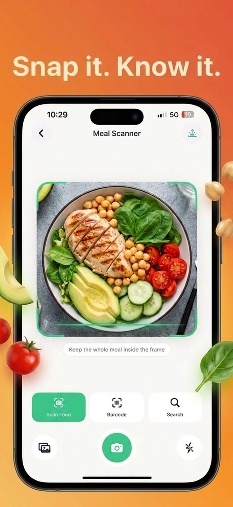
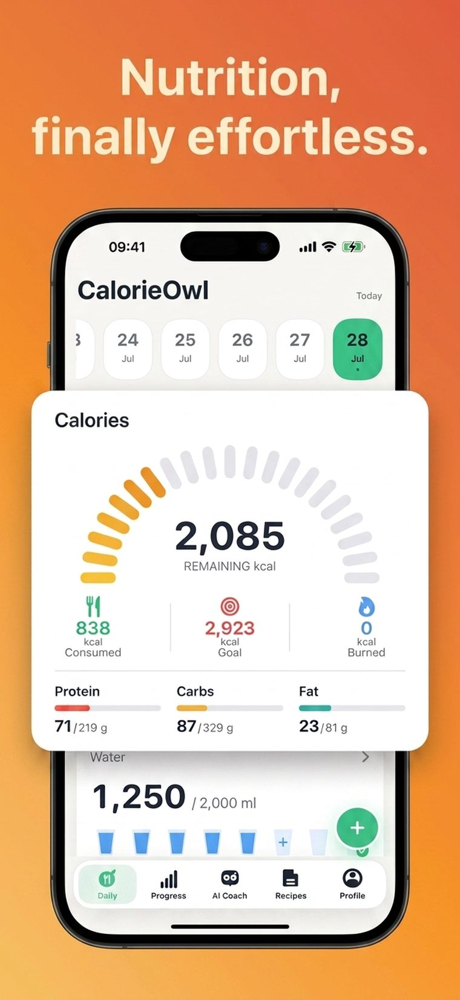
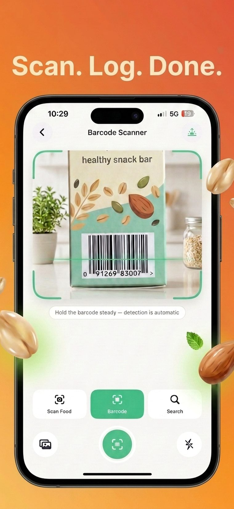
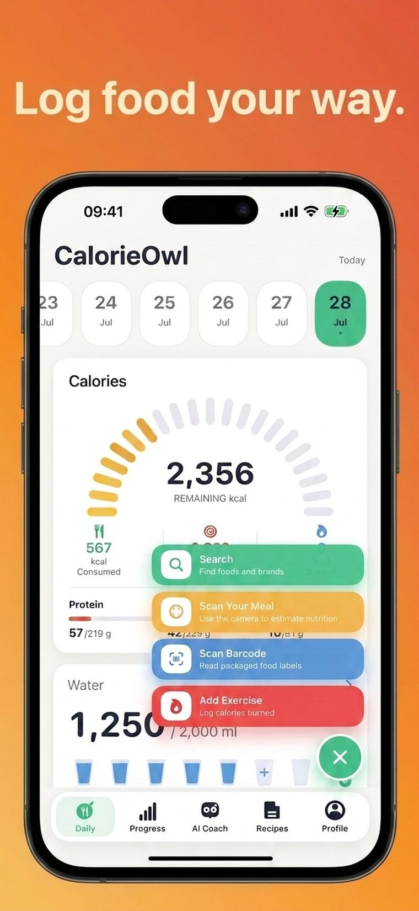
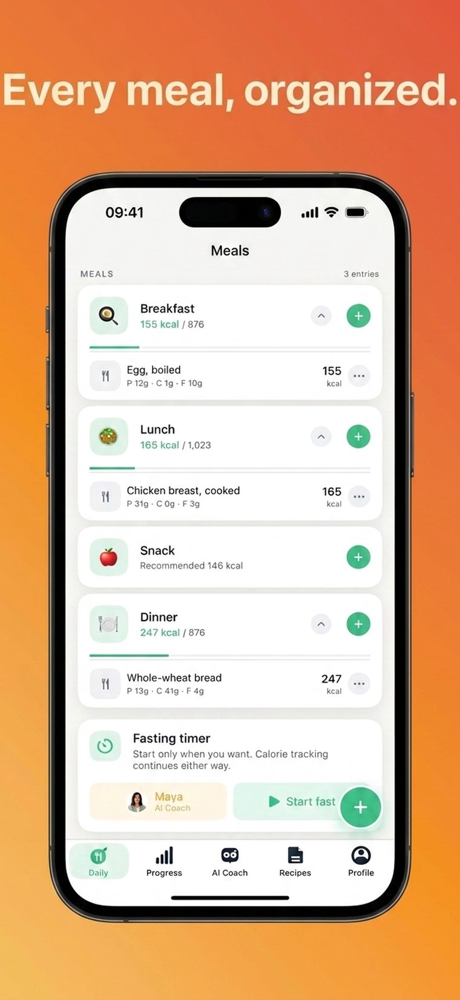
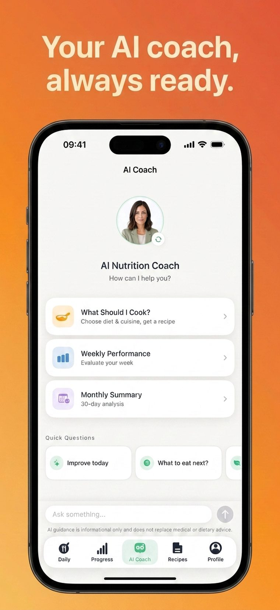
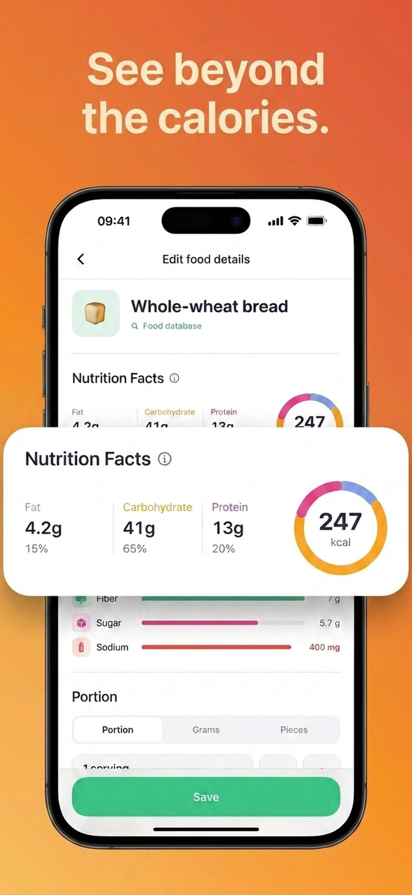
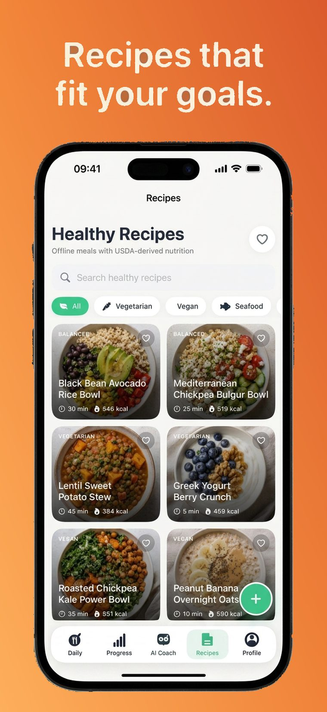
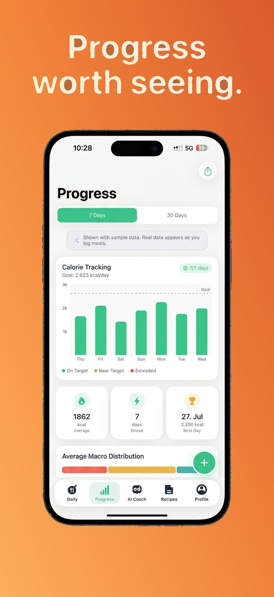

AI meal scanner
Point your camera at a meal. AI identifies the food, estimates the portion, and logs calories, protein, carbs and fat in seconds.
AI-powered nutrition tracking
Snap a photo of your plate and CalorieOwl handles the rest. AI recognizes the meal, estimates the portion, and fills in calories, protein, carbs and fat automatically.

Most calorie counters fail for one reason: logging takes too long. CalorieOwl was built to fix that.

Point your camera at a meal. AI identifies the food, estimates the portion, and logs calories, protein, carbs and fat in seconds.

Scan any packaged food barcode for instant, accurate nutrition facts — no manual entry required.

Search a food database, snap a photo, or scan a barcode — whichever is fastest for the meal in front of you.

Breakfast, lunch, dinner and snacks are tracked separately, alongside an optional intermittent fasting timer.

Ask about your day, your macros, or your plan and get a clear, personal answer based on what you've actually logged.

Every entry breaks down fat, carbs, protein, fiber, sugar and sodium — the full picture, not just a number.

A curated recipe library with real nutrition data, filterable by diet — vegetarian, vegan, seafood and more.

Track your calorie trend, streaks and macro balance over the past week or month — the pattern, not the noise.
Most people who try to count calories quit within a week or two — not because they lack discipline, but because logging takes too long. CalorieOwl removes that friction with a camera-first workflow, so tracking your nutrition takes seconds instead of minutes.
Camera-first logging with barcode and search fallbacks means every meal takes seconds, not minutes, to record.
Calorie targets are calculated from your height, weight, age, activity level and goal — not a generic estimate.
Water, weight, steps, fasting and an AI coach live alongside your food log, so you get one habit instead of five.
Have a question, found a bug, or need help with your subscription? We're here to help.
ismailturanli91@gmail.com
How your data is handled
Subscriptions & usage rules
Open Settings on your iPhone, tap your name, tap Subscriptions, select CalorieOwl, and tap Cancel Subscription. You need to cancel at least 24 hours before renewal. Deleting the app does not cancel your subscription.
Yes. We never use your health, fitness, or nutrition data for advertising, and we don't sell it. Food photos are stored on your device and only sent to our AI provider briefly to identify the meal. See our Privacy Policy for full details.
No. Step counting uses your device's built-in motion sensors directly, not Apple Health.
No. CalorieOwl is a self-tracking wellness tool, not a medical device. Calorie and macro estimates are informational. Please consult a physician or registered dietitian before starting any diet, fasting, or exercise program.
All payments are processed by Apple, so refunds are handled by Apple Support. Use the "Report a Problem" link in your App Store purchase history, or visit reportaproblem.apple.com.
Email us at ismailturanli91@gmail.com with as much detail as you can — your device model, iOS version, and steps to reproduce the issue. We read every message.